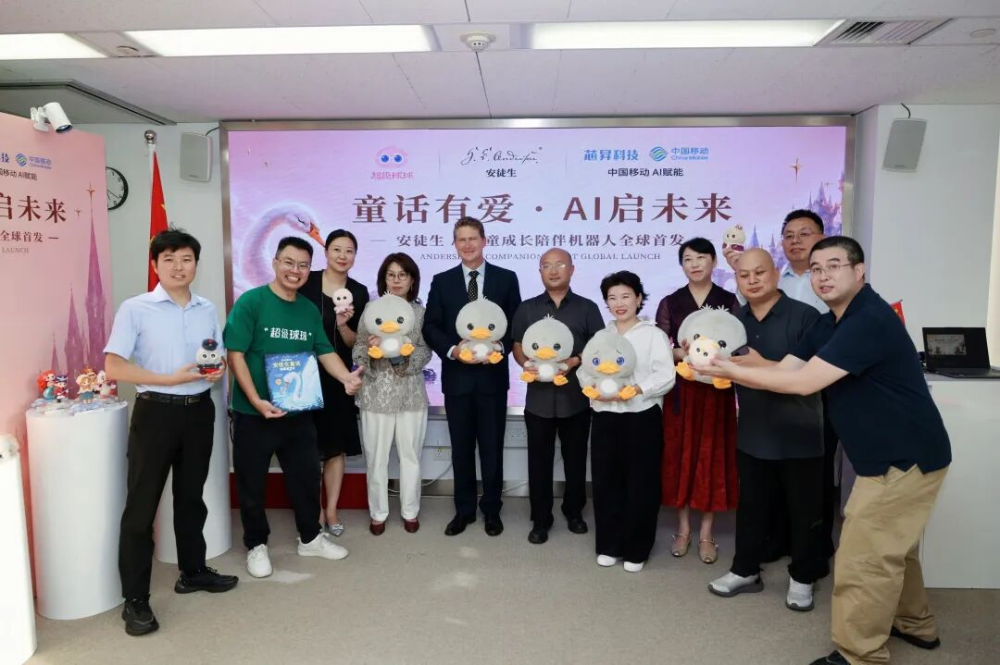
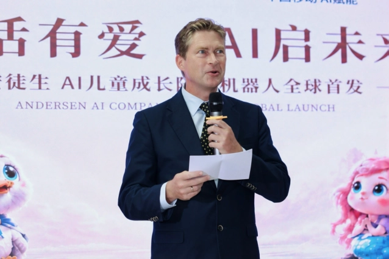
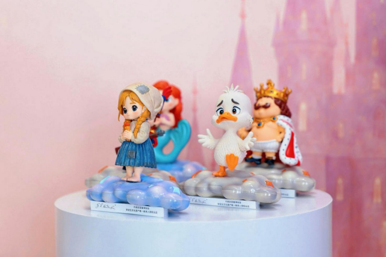
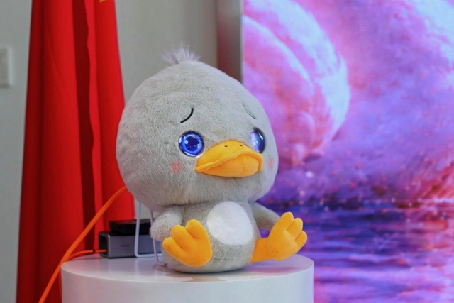
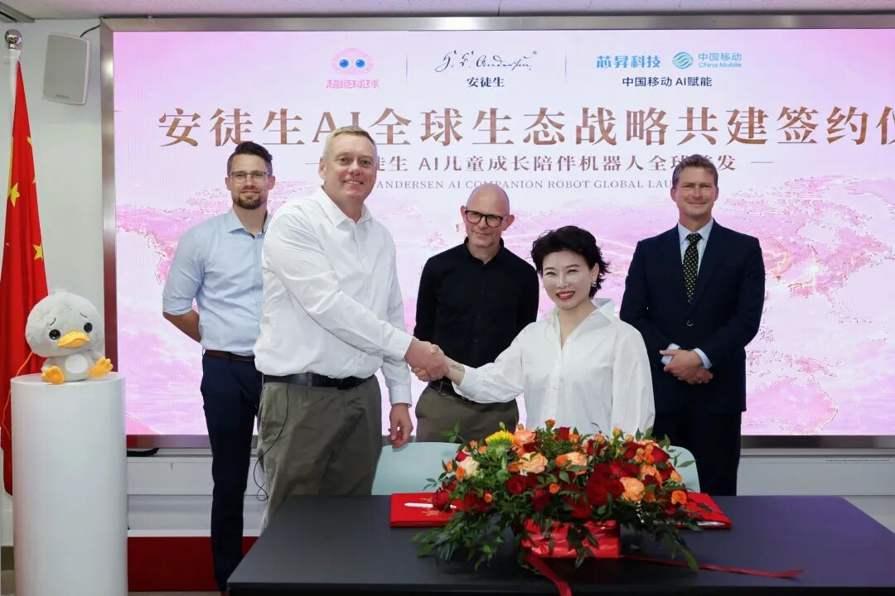
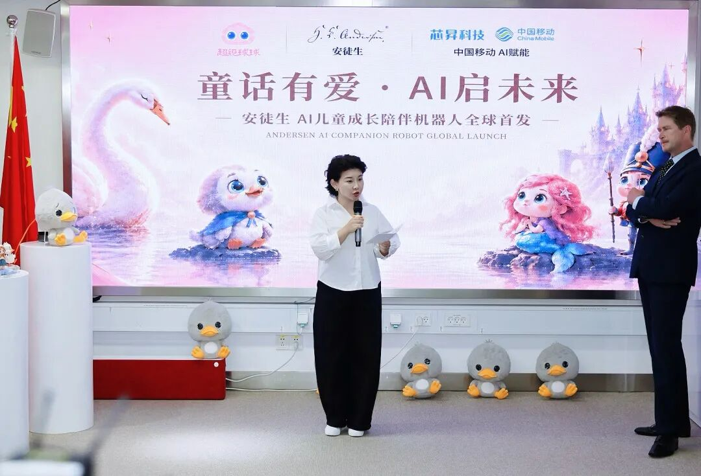

上海，2026 年 8 月 28 日——当拥有两百多年历史的安徒生童话遇见中国人工智能，会产生怎样的新可能？
8 月 28 日，以“童话有爱·AI 启未来”为主题的安徒生系列 AI 儿童产品全球首发活动在丹麦王国驻上海总领事馆举行。
丹麦王国驻上海总领事 Jens Alsbirk 严慕白先生、丹麦安徒生博物馆 Mads Thagaard Runge 馆长、超级球球创始人元晓帅博士及中丹双方政府、文化、科技和产业界代表出席活动，共同见证安徒生系列 AI 儿童产品首次面向全球发布。

发布会现场，超级球球（超级有爱智能科技旗下 AI 儿童机器人品牌）正式发布四大安徒生 AI 儿童产品系列，并公布全球市场战略。超级球球还与中国移动芯昇科技、涂鸦智能、ClassOver、RedFunPlanet 等企业及合作伙伴围绕 AI 技术、智能硬件、全球市场和产业生态等方向达成战略合作，共同推进安徒生 AI 产品全球生态建设。
与普通 IP 新品发布不同，这场活动释放出的另一个信号是：拥有全球影响力的丹麦经典文化，正在与中国快速发展的人工智能产业形成新的连接。
丹麦总领事：这是中丹之间一次重要的合作
活动现场，丹麦王国驻上海总领事 Jens Alsbirk 严慕白先生在致辞中谈到了此次合作对于中丹交流的意义，并将其视为中丹之间一次重要的合作。总领事先生说：“此次合作代表了中丹合作的一种全新形式——文化、科技与创新在这里交汇。”

安徒生博物馆馆长 Mads Thagaard Runge 先生也来到首发现场。作为安徒生文化遗产重要的研究、保护与传播机构，博物馆方面的参与，使此次合作不再只是通常意义上的商业 IP 开发，而更多呈现出文化传承与新技术应用相结合的特点。
这也是此次项目值得关注的特殊之处：一端是已经影响世界两百多年的文化经典；另一端，则是正在快速改变全球产业和生活方式的人工智能。一个代表历史留下来的文化价值，一个代表正在发生的未来。双方试图探索的，是经典文化在 AI 时代新的表达方式。
四大系列集中亮相，安徒生童话进入 AI 交互时代
发布会现场，安徒生四大系列 AI 儿童产品首次集中亮相，系列延续了超级球球在儿童成长陪伴领域的产品方向，围绕性格养成、心理情绪陪伴和中英双语成长三大核心需求，形成覆盖 0—18 岁不同成长阶段的产品体系。
此次发布的产品包括安徒生童话智能双语有声书、丑小鸭 AI 智能对话毛绒版、安徒生 IP 限定版 AI 潮玩手办，以及超级球球 × 安徒生联合 IP 系列。产品形态从智能有声书、毛绒陪伴机器人延伸至 AI 潮玩和成长陪伴机器人，尝试让经典童话以更具互动性的方式进入儿童日常生活。

其中，面向 0—4 岁儿童的安徒生童话智能双语有声书，将经典故事、艺术绘画、智能语音与双语启蒙结合，让儿童在听故事、看绘本的过程中接触童话与英语；面向 3—12 岁儿童的丑小鸭 AI 智能对话毛绒版，则将毛绒玩偶与 AI 智能体结合，在童话、儿歌和双语互动之外，进一步加入情绪陪伴与成长互动，希望借由“丑小鸭”的成长故事，传递自我认同与自信成长的价值。
针对年龄更大的儿童和青少年，安徒生 IP 限定版 AI 潮玩手办将安徒生经典人物转化为拥有不同性格特征和成长寓意的 AI 角色，在收藏属性之外增加 AI 对话、童话互动和双语交流能力；超级球球 × 安徒生联合 IP 系列面向 6—18 岁儿童及青少年，将超级球球的 AI 成长陪伴能力与安徒生童话所承载的精神价值进一步结合，通过情绪识别、共情对话、长期陪伴及双语互动等方式，探索 AI 在儿童情绪表达、性格成长等场景中的应用。
值得关注的是，四大系列并非简单将安徒生 IP 应用于不同产品形态，而是试图建立一条从“故事启蒙”到“互动陪伴”，再到“性格与心理成长”的产品路径。
从 IP 授权到“数字生命”
人工智能正在改变 IP 与用户之间的关系。过去，经典 IP 进入消费产品，通常意味着形象授权、内容授权或者联名设计。但在生成式 AI 和智能硬件快速发展的背景下，IP 开始出现一种新的可能——从静态的文化形象，进一步转变为具有交互能力和人格特征的数字角色。
此次首发中，超级球球尝试将安徒生经典人物背后的价值与不同 AI 人格结合。例如，《丑小鸭》对应自信与成长，《坚定的锡兵》对应坚持，《小美人鱼》对应爱与探索，《皇帝的新装》对应独立思考。这意味着，未来孩子面对成长中的不同问题时，童话角色不再只存在于书页、动画或玩偶中，而可能通过 AI 与孩子进行持续交流。
超级球球将这一方向定义为：让经典童话人物拥有“数字生命”。这也是此次合作区别于传统 IP 联名的核心所在——不是简单把经典人物做成 AI 产品，而是尝试把经典人物背后的精神价值转化为可以交互的 AI 人格。

中国移动芯昇科技、涂鸦智能、ClassOver、RedFunPlanet 等加入生态合作
产品之外，产业合作成为当天发布会的另一个重点。现场，超级球球与中国移动芯昇科技、涂鸦智能、ClassOver、RedFunPlanet 等企业及合作伙伴进行战略合作签约。此次合作已经不局限于单一的产品开发，而开始覆盖 AI 技术、芯片及智能硬件、物联网能力、教育内容、供应链以及全球市场渠道等不同环节。
超级球球同时启动安徒生 AI 全球生态战略共建计划，计划围绕产品与技术共创、产业与生态共建、全球市场共拓等方向连接更多合作伙伴。这意味着，安徒生 AI 项目的目标并非只推出几款联名产品，而是希望逐步建立围绕经典文化 IP、AI 技术、智能硬件及全球渠道形成的产业生态。

中国 AI 企业开始寻找新的全球化路径
当天，超级球球同步发布全球市场战略，未来将重点布局中国、欧洲、北美、日本等市场，并推进线上、线下渠道及全球合作伙伴体系建设。
过去，中国科技消费品的全球化优势更多来自制造、供应链和成本效率。而安徒生 AI 项目呈现出了另一种路径：中国 AI 技术 + 世界经典文化 + 全球消费市场。
这使此次合作具有了超越单一产品的产业观察价值。对于中国 AI 企业而言，下一阶段的出海竞争可能不再只是“把中国制造的产品卖到海外”，而是如何利用技术创新，与不同国家的文化资产、品牌资源和本地市场结合，建立真正具有全球认知的产品。
AI 进入孩子的童年之后，什么才是最重要的？
发布会现场，超级球球 CEO 元晓帅博士也将话题从产品重新拉回到了“人”。
元晓帅博士表示，超级球球长期关注人工智能、心理学与儿童成长的结合。其核心思考并不是如何让 AI 提供给孩子更多信息，而是当 AI 越来越深入地进入孩子的成长环境，它究竟应该承担怎样的角色。
元博士致辞中说：“技术决定 AI 能做什么，文化决定我们希望 AI 成为什么。我们希望携手丹麦安徒生博物馆共同探索：当世界经典童话人物拥有了数字生命，当中国 AI 开始与不同国家的文化资产深度结合，最终能够为人留下些什么？”

这也解释了为什么一家中国 AI 儿童机器人企业，会选择一个拥有两百多年历史的丹麦文化经典。AI 提供新的技术载体，而安徒生提供的是经历时间验证的人文价值。爱、勇气、自信、善良、想象力，以及面对世界的力量。技术一直在变化，但孩子对理解、成长与陪伴的需要并没有因此消失。
从 1805，到 AI 时代。两百多年前，安徒生用文字创造了一个童话世界。两百多年后，中国 AI 正在尝试让这些经典人物以新的方式重新走进下一代的生活。
关于有爱智能
超级有爱（杭州）智能科技有限公司是一家专注于人工智能在情绪健康、心理陪伴与儿童成长领域创新应用的原生 AI 科技企业，旗下核心品牌为“超级球球”。
公司以“AI 最终服务于人”为技术价值观，长期探索人工智能、心理学与智能硬件的深度融合，核心研发团队汇聚清华大学、北京师范大学等国内高校及海外名校背景人才，并由多位博士参与研发；经过多年技术积累和多代产品迭代，逐步形成面向儿童成长场景的 AI 能力体系。公开报道显示，其“超级球球”产品重点围绕情绪识别、共情交互、长期记忆与成长引导等方向展开，并已在 CES Asia、WAIC 等场合亮相，产品在京东、抖音等线上平台及京东 Mall、陶朱新造局等线下渠道销售。有爱智能并不将自己定义为一家单纯的 AI 玩具公司。公司更关注一个长期命题：当 AI 越来越深入地进入人的生活，技术如何真正理解人、支持人，并为人的成长创造价值。
2026 年，公司进一步携手安徒生经典文化，探索让经典童话人物拥有“数字生命”，推动世界经典文化与中国 AI 技术结合，并以此开启面向全球家庭的新一阶段探索。